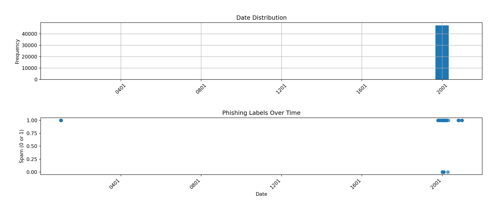
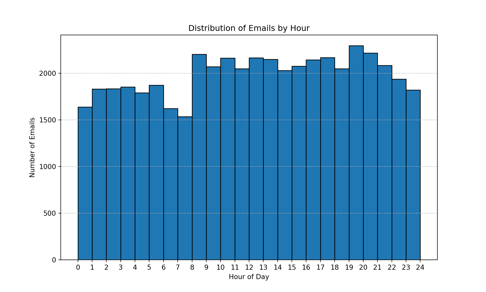

The goal of this workflow is to take a raw email dataset and prepare the email body for input into machine learning models. This involves cleaning the text, removing irrelevant tokens, and normalizing words through stemming and lemmatization.
We start by importing necessary Python libraries for data handling, visualization, and modeling. Then we load the phishing dataset.
# Import needed libraries
import pandas as pd
import numpy as np
import kagglehub
from kagglehub import KaggleDatasetAdapter
from datetime import datetime
from IPython.display import display, IFrame
import matplotlib.pyplot as plt
import seaborn as sns
from wordcloud import WordCloud
from sklearn.feature_extraction.text import TfidfVectorizer, CountVectorizer
from sklearn.model_selection import train_test_split
from sklearn.preprocessing import StandardScaler
import nltk
from nltk import bigrams
from nltk.corpus import stopwords
from nltk.stem import WordNetLemmatizer
from nltk.tokenize import word_tokenize
from nltk.stem import PorterStemmer
from nltk.stem import WordNetLemmatizer
import re
import spacy
from collections import Counter
import plotly.io as pio
pio.renderers.default = "iframe_connected"
import plotly.graph_objects as go
from plotly.subplots import make_subplots
import plotly.express as px
import webbrowser
from sklearn.linear_model import LogisticRegression
from sklearn.feature_extraction.text import CountVectorizer
from sklearn.neural_network import MLPClassifier
from sklearn.model_selection import GridSearchCV
from sklearn.naive_bayes import BernoulliNB
from sklearn.metrics import confusion_matrix, ConfusionMatrixDisplay
from tabulate import tabulate
import random
random.seed(42)nltk.download('stopwords')## Truenltk.download('punkt')## Truenltk.download("wordnet")## Truenltk.download("omw-1.4")## Truenlp = spacy.load("en_core_web_sm")
ps = PorterStemmer()
wnl = WordNetLemmatizer()df = pd.read_csv("data\phishing_data.csv")We begin by identifying missing values and understanding the data types for each column.
# Check dimentions of dataset
print("First 5 records:\n", df.head(), "\n")## First 5 records:
## sender ... source
## 0 Young Esposito <Young@iworld.de> ... CEAS_08.csv
## 1 Mok <ipline's1983@icable.ph> ... CEAS_08.csv
## 2 Daily Top 10 <Karmandeep-opengevl@universalnet... ... CEAS_08.csv
## 3 Michael Parker <ivqrnai@pobox.com> ... CEAS_08.csv
## 4 Gretchen Suggs <externalsep1@loanofficertool.com> ... CEAS_08.csv
##
## [5 rows x 8 columns]print("Dimensions:\n", df.shape, "\n")## Dimensions:
## (49860, 8)# See data types
df.info()## <class 'pandas.core.frame.DataFrame'>
## RangeIndex: 49860 entries, 0 to 49859
## Data columns (total 8 columns):
## # Column Non-Null Count Dtype
## --- ------ -------------- -----
## 0 sender 49529 non-null object
## 1 receiver 47768 non-null object
## 2 date 49377 non-null object
## 3 subject 49773 non-null object
## 4 body 49859 non-null object
## 5 urls 49860 non-null int64
## 6 label 49860 non-null int64
## 7 source 49860 non-null object
## dtypes: int64(2), object(6)
## memory usage: 3.0+ MB# Check for missing values
print("Missing values:\n", df.isnull().sum(), "\n")## Missing values:
## sender 331
## receiver 2092
## date 483
## subject 87
## body 1
## urls 0
## label 0
## source 0
## dtype: int64Here we remove rows with missing email bodies or labels, examine outliars, and ensure variables are converted to the correct formats. Also, add timestamp as separate variable for our analysis.
# Drop na values in body column
df = df.dropna(subset=['body', 'label'])
# Check for missing values
print("Missing values:\n", df.isnull().sum(), "\n")## Missing values:
## sender 331
## receiver 2092
## date 483
## subject 87
## body 0
## urls 0
## label 0
## source 0
## dtype: int64# Convert parameters to proper types
df['label'] = pd.to_numeric(df['label'], errors='coerce')
df['date'] = pd.to_datetime(df['date'], errors='coerce')## <string>:1: FutureWarning:
##
## In a future version of pandas, parsing datetimes with mixed time zones will raise an error unless `utc=True`. Please specify `utc=True` to opt in to the new behaviour and silence this warning. To create a `Series` with mixed offsets and `object` dtype, please use `apply` and `datetime.datetime.strptime`df = df.dropna(subset=['date'])
df['time'] = df['date'].apply(lambda x: x.time())
df['hour'] = df['time'].apply(lambda x: x.hour)
# Recheck variable types
print(df.info())## <class 'pandas.core.frame.DataFrame'>
## Index: 47583 entries, 0 to 49858
## Data columns (total 10 columns):
## # Column Non-Null Count Dtype
## --- ------ -------------- -----
## 0 sender 47507 non-null object
## 1 receiver 45646 non-null object
## 2 date 47583 non-null object
## 3 subject 47513 non-null object
## 4 body 47583 non-null object
## 5 urls 47583 non-null int64
## 6 label 47583 non-null int64
## 7 source 47583 non-null object
## 8 time 47583 non-null object
## 9 hour 47583 non-null int64
## dtypes: int64(3), object(7)
## memory usage: 4.0+ MB
## None# Now let's examine it's variables
print(df['sender'].describe())## count 47507
## unique 30125
## top qydlqcws-iacfym@issues.apache.org
## freq 462
## Name: sender, dtype: objectprint(df['receiver'].describe())## count 45646
## unique 5927
## top user6@gvc.ceas-challenge.cc
## freq 1375
## Name: receiver, dtype: objectprint(df['subject'].describe())## count 47513
## unique 21995
## top CNN.com Daily Top 10
## freq 2930
## Name: subject, dtype: objectprint(df['body'].describe())## count 47583
## unique 47582
## top \n\n
## freq 2
## Name: body, dtype: objectprint(df['urls'].describe())## count 47583.000000
## mean 0.673034
## std 0.469109
## min 0.000000
## 25% 0.000000
## 50% 1.000000
## 75% 1.000000
## max 1.000000
## Name: urls, dtype: float64print(df['date'].describe())## count 47583
## unique 43945
## top 2008-08-07 21:38:18-01:00
## freq 9
## Name: date, dtype: objectprint(df['time'].describe())## count 47583
## unique 36175
## top 08:00:51
## freq 12
## Name: time, dtype: objectprint(df['hour'].describe())## count 47583.000000
## mean 11.895425
## std 6.777205
## min 0.000000
## 25% 6.000000
## 50% 12.000000
## 75% 18.000000
## max 23.000000
## Name: hour, dtype: float64print(df['source'].value_counts())## source
## CEAS_08.csv 39139
## SpamAssasin.csv 4618
## Nigerian_Fraud.csv 2850
## Nazario.csv 976
## Name: count, dtype: int64print(df['label'].value_counts())## label
## 1 27064
## 0 20519
## Name: count, dtype: int64# Find row with min date
display(df[df.date == df.date.dropna().min()])## sender ... hour
## 48742 <FREE-TV-4-U6473u20@tfn.net> ... 11
##
## [1 rows x 10 columns]# Find row with max date
display(df[df.date == df.date.dropna().max()])## sender ... hour
## 29606 ricci <ricci-jtnjibor@1010security.com> ... 15
##
## [1 rows x 10 columns]# Remove data outliar
min_date = df['date'].dropna().min()
max_date = df['date'].dropna().max()
df = df[(df['date'] != min_date) & (df['date'] != max_date)]We take a look at the most common senders, receivers, and subject lines to better understand the dataset context.
# Exmaine the most and least common subject lines
table_positive = df[df['label'] == 1]
table_negative = df[df['label'] == 0]
print(table_positive['subject'].value_counts().head(10))## subject
## CNN.com Daily Top 10 2930
## CNN Alerts: My Custom Alert 1406
## Re: 585
## 123 255
## Re: 123
## How To Enlarge Penis Size 100
## Qualitative replica watches for most exacting people 65
## Penis Enlargment Reviews 62
## Produce Stronger, Rock Hard Erections. 61
## You our client! 61
## Name: count, dtype: int64print(table_positive['subject'].value_counts().tail(10))## subject
## -- USA Business Search CD -- 1
## Mortgage Rates Are Down. teoqknmp 1
## The Elite Equity Indexed U.L. Policy 1
## The Government Grants you $25,000! 1
## Announcing Herbal Smoking Alternatives 1
## Toners and inkjet cartridges for less.... CTLOSJV 1
## Tired Of Your High Mortgage Rate - REFINANCE TODAY..... 1
## Hello lanigel Free Teen Action! 1
## ** You're -Approved-! ** 1
## ;) Look porno Gallery!!! 1
## Name: count, dtype: int64print(table_negative['subject'].value_counts().head(10))## subject
## Re: [opensuse] openSUSE 11.0 and the Non-ready KDE4 103
## Direct message from SpamExperts via web 84
## Re: [opensuse] Defragging: possible? necessary? 76
## Re: [opensuse] [OT] How much power does a PC really consume? 74
## Re: [opensuse] ext3 check forced = frustration 69
## Re: [Python-Dev] PEP 365 (Adding the pkg_resources module) 62
## Re: [Python-3000] u'text' as an alias for 'text'? 61
## Re: [Python-3000] range() issues 51
## Re: [opensuse] [OT] How much power does a PC really consume? 50
## Re: [opensuse] true news group? 49
## Name: count, dtype: int64print(table_negative['subject'].value_counts().tail(10))## subject
## SOURCEFORGE.NET UPDATE: August 14, 2002 1
## Neat Net Tricks Standard Issue 131 - August 15, 2002 1
## WinXPnews: Time To Patch Your Windows Media Player 1
## iSilo announcements (August 15, 2002) 1
## MiniNTK 2002-08-16 1
## World Wide Words -- 17 Aug 02 1
## Re: kernel BUG at filemap.c:843! 1
## [use Perl] Stories for 2002-08-18 1
## Movies to Watch on Lifetime 1
## [use Perl] Stories for 2002-09-17 1
## Name: count, dtype: int64# Exmaine the most and least common senders
print(df['sender'].value_counts().head(10))## sender
## qydlqcws-iacfym@issues.apache.org 462
## Guido van Rossum <hoauf@python.org> 295
## "\\"Martin v. Löwis\\"" <qpnysl@v.loewis.de> 276
## "Carlos E. R." <vyjwd.trpcau@telefonica.net> 208
## Aaron Kulkis <cmiqlkx91@hotpop.com> 183
## Rafael Garcia-Suarez <pvhuhqgncrxnu@gmail.com> 158
## Christian Heimes <wluhe@cheimes.de> 152
## Barry Warsaw <pjaxq@python.org> 131
## iybz@pobox.com 124
## Per Jessen <uee@computer.org> 113
## Name: count, dtype: int64print(df['sender'].value_counts().tail(10))## sender
## Amir <> 1
## Sylvia George <cco@boelzner.com> 1
## Sheena Mckenna <Sheena@allianz.pt> 1
## Noel Cano <dwtiscalim@tiscali.it> 1
## Daily Top 10 <Kandace-ukodibeh@victoriaco.com> 1
## Ty Conway <StaceybearberryRojas@defamer.com> 1
## "\\"Michael Höller\\"" <g_nsotzyl@gmx.de> 1
## Cornell Gillespie <AntonypyrometerCardenas@nature.com> 1
## Nhan <> 1
## Caroline Aragon <dwthaidomainnamesm@thaidomainnames.com> 1
## Name: count, dtype: int64# Exmaine the most and least common recievers
print(df['receiver'].value_counts().head(10))## receiver
## user6@gvc.ceas-challenge.cc 1375
## wkilxloc@opensuse.org 1230
## user2.1@gvc.ceas-challenge.cc 1036
## user2.2@gvc.ceas-challenge.cc 922
## user2.4@gvc.ceas-challenge.cc 738
## user2.13@gvc.ceas-challenge.cc 686
## user7@gvc.ceas-challenge.cc 674
## user7-ext4@gvc.ceas-challenge.cc 655
## user8.2-ext1@gvc.ceas-challenge.cc 654
## user7-ext3@gvc.ceas-challenge.cc 652
## Name: count, dtype: int64print(df['receiver'].value_counts().tail(10))## receiver
## lihochin@yahoo.com 1
## foo-faq@foo-ag.de, FOREGONE@MSN.COM, forgione@starpower.net, 1
## Nadeem.Pedersev@dogma.slashnull.org 1
## jalalx.siksik@intel.com 1
## <finance_now21@cybergrrl.com> 1
## "ihslzjy@msn.com" <ihslzjy@msn.com> 1
## <Value.Seeker@netnoteinc.com> 1
## Paul Lehto <babselaxgyc@gmail.com> 1
## dannywalk@ntlworld.com, ross@excentric.com, 1
## bookscanada@ramsaybooks.com 1
## Name: count, dtype: int64Let’s visualize the distribution of emails across the timeline, and the distribution of the time stamps.
df_plot = df.dropna(subset=['date'])
fig, axs = plt.subplots(2, 1, figsize=(14, 6), sharex=False)
# Plot 1: Histogram of dates
df['date'].hist(bins=30, ax=axs[0])
axs[0].set_title('Date Distribution')
axs[0].set_ylabel('Frequency')
axs[0].tick_params(axis='x', rotation=45)
# Plot 2: Phishing labels over time
df_plot.set_index('date')['label'].plot(
ax=axs[1], linestyle=' ', marker='o', alpha=0.7
)
axs[1].set_title('Phishing Labels Over Time')
axs[1].set_xlabel('Date')
axs[1].set_ylabel('Spam (0 or 1)')
axs[1].tick_params(axis='x', rotation=45)
# Adjust spacing between plots
plt.tight_layout(pad=3.0)
plt.show()
plt.figure(figsize=(10,6))
plt.hist(df_plot['hour'], bins=24, range=(0,24), edgecolor='black')
plt.xlabel('Hour of Day')
plt.ylabel('Number of Emails')
plt.title('Distribution of Emails by Hour')
plt.xticks(range(0,25))## ([<matplotlib.axis.XTick object at 0x000001A56FBD7050>, <matplotlib.axis.XTick object at 0x000001A56F13CF90>, <matplotlib.axis.XTick object at 0x000001A56F936C50>, <matplotlib.axis.XTick object at 0x000001A56F92E2D0>, <matplotlib.axis.XTick object at 0x000001A56F92F050>, <matplotlib.axis.XTick object at 0x000001A56F919F50>, <matplotlib.axis.XTick object at 0x000001A56F91A550>, <matplotlib.axis.XTick object at 0x000001A56F922750>, <matplotlib.axis.XTick object at 0x000001A56F90CE50>, <matplotlib.axis.XTick object at 0x000001A56F90F450>, <matplotlib.axis.XTick object at 0x000001A56F908190>, <matplotlib.axis.XTick object at 0x000001A56F90A650>, <matplotlib.axis.XTick object at 0x000001A56F904B90>, <matplotlib.axis.XTick object at 0x000001A56F906B50>, <matplotlib.axis.XTick object at 0x000001A56F905350>, <matplotlib.axis.XTick object at 0x000001A56F902550>, <matplotlib.axis.XTick object at 0x000001A56FA049D0>, <matplotlib.axis.XTick object at 0x000001A56FA06DD0>, <matplotlib.axis.XTick object at 0x000001A56FA093D0>, <matplotlib.axis.XTick object at 0x000001A56FA0A610>, <matplotlib.axis.XTick object at 0x000001A56FA18710>, <matplotlib.axis.XTick object at 0x000001A56FA1AC10>, <matplotlib.axis.XTick object at 0x000001A56FA1D290>, <matplotlib.axis.XTick object at 0x000001A56FA1F0D0>, <matplotlib.axis.XTick object at 0x000001A56FA243D0>], [Text(0, 0, '0'), Text(1, 0, '1'), Text(2, 0, '2'), Text(3, 0, '3'), Text(4, 0, '4'), Text(5, 0, '5'), Text(6, 0, '6'), Text(7, 0, '7'), Text(8, 0, '8'), Text(9, 0, '9'), Text(10, 0, '10'), Text(11, 0, '11'), Text(12, 0, '12'), Text(13, 0, '13'), Text(14, 0, '14'), Text(15, 0, '15'), Text(16, 0, '16'), Text(17, 0, '17'), Text(18, 0, '18'), Text(19, 0, '19'), Text(20, 0, '20'), Text(21, 0, '21'), Text(22, 0, '22'), Text(23, 0, '23'), Text(24, 0, '24')])plt.grid(axis='y', linestyle='--', alpha=0.7)
We will add receiver and sender emails without the @, as the names can be useful for our analysis.
# Split sender email
df['sender_user'] = df['sender'].str.split('@').str[0]
df['sender_domain'] = df['sender'].str.split('@').str[1]
# Split receiver email
df['receiver_user'] = df['receiver'].str.split('@').str[0]
df['receiver_domain'] = df['receiver'].str.split('@').str[1]
# Add them as words to the beginning of body
df['body'] = (
df['sender_user'].fillna('') + ' ' +
df['sender_domain'].fillna('') + ' ' +
df['receiver_user'].fillna('') + ' ' +
df['receiver_domain'].fillna('') + ' ' +
df['body']
)We clean the email body by:
# Clean and tokenize emails
df['body'] = df['body'].str.lower()
df['body'] = df['body'].apply(lambda x: re.sub(r'[^\w\s]', '', str(x)))
df['body'] = df['body'].apply(lambda x: re.sub(r'\d+', '', str(x)))
df['body'] = df['body'].apply(lambda x: re.sub(r'\s+', ' ', str(x)).strip())
# Tokenize body text
df['body tokens'] = df['body'].str.split()
# Define stop words and unnecessary words
stop_words = set(stopwords.words('english'))
unnecessary_words = {'', 'nt', 'cnn', 'cnncom', 'us', 'go', 'like', 'get', 'one', 'use', 'also', 'going', 'lp', 'lllp', 'im', '_', 'submissionid', 'gvcceaschallengecc'}
# Apply cleaning steps
df['body tokens'] = df['body tokens'].apply(lambda x: [word for word in x if word.lower() not in stop_words])
df['body tokens'] = df['body tokens'].apply(lambda x: [word for word in x if not word.startswith('http')])
df['body tokens'] = df['body tokens'].apply(lambda x: [word for word in x if len(word) > 2])
df['body tokens'] = df['body tokens'].apply(lambda x: [word for word in x if word.lower() not in unnecessary_words])
df = df.dropna(subset=['body tokens'])
df['body tokens'] = df['body tokens'].apply(lambda x: [wnl.lemmatize(word) for word in x])
df['body tokens'] = df['body tokens'].apply(lambda x: [ps.stem(word) for word in x])
df = df.dropna(subset=['body tokens'])
# Convert tokenized text back to strings for TF-IDF
df['cleaned body'] = df['body tokens'].apply(lambda x: ' '.join(x))Each email is now represented as a cleaned, tokenized, and normalized list of words, and ready for classification with models like Naive Bayes, Logistic Regression, or MLP.
print(df['body tokens'].head())## 0 [young, esposito, young, iworldd, user, buck, ...
## 1 [mok, iplin, icableph, user, upgrad, sex, plea...
## 2 [daili, top, karmandeepopengevl, universalnetp...
## 3 [michael, parker, ivqrnai, poboxcom, spamassas...
## 4 [gretchen, sugg, externalsep, loanofficertoolc...
## Name: body tokens, dtype: object